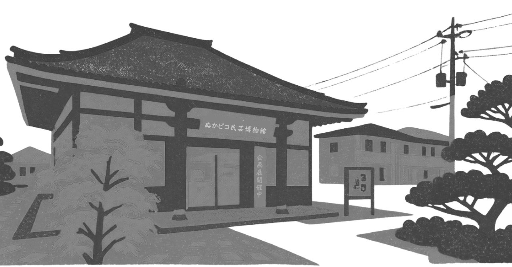
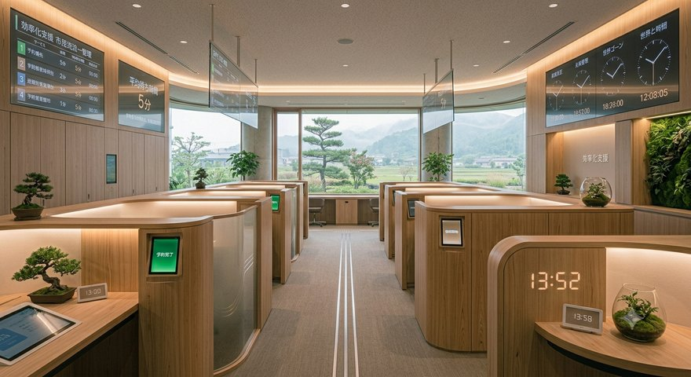
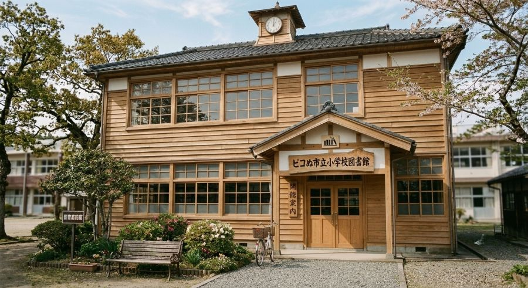
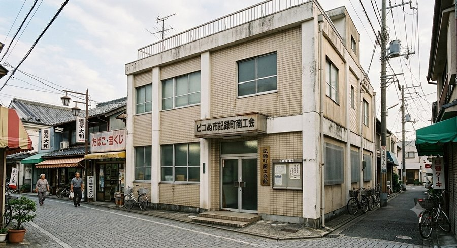

PR動画
お知らせ
お知らせ一覧を見る >- 健康・医療 資料「現代人診療報酬点数表」を掲載しました
- 健康・医療 ぬかピコ感染予防ワクチン接種のご案内
- 助成金 目的のない事業に対する助成金について
- 広報 広報ぬかピコ最新号を掲載しました
- 市議会 市議会定例会開催のお知らせ
市の施設
施設一覧を見る >





アクセス記録
人目のご来庁です。記録上意味のある番号についてはこちら。